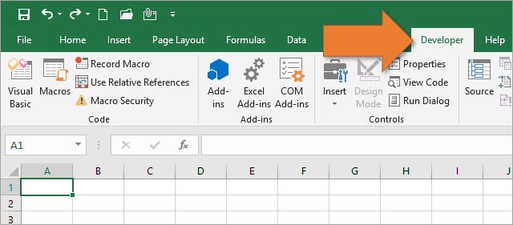
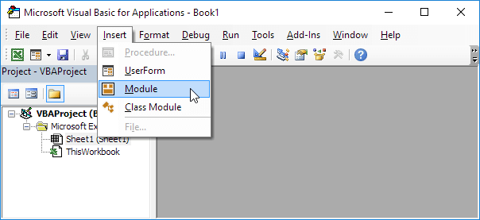
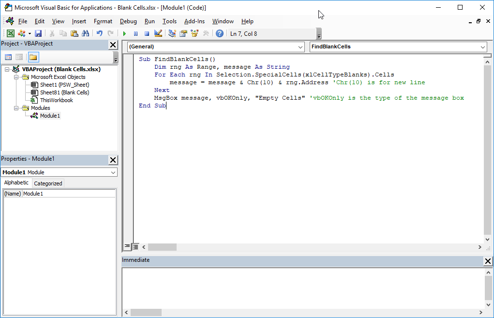
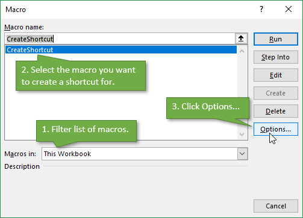
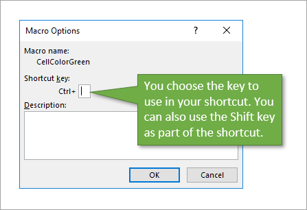

Back to Home
Adding a Macro to Excel
- Open Excel and go to the Developer tab in your ribbon. If you do not have that tab go to
Adding the Developer tab to learn how to add it.

- Open Visual Basic (the top left of the picture above)
- Click on "Insert", and "Module"

- In "Module1" that appears, paste the code where you see it in the picture

- Close "Visual Basic", then open "Macros" (right next to Visual Basic) and select "hype_link"
- Click on "Options", then assign a key-bind to it.


Your macro should now be set up and assigned to use with a key-bind! To run it, simply press "Ctrl" and whatever key you decided to assign it to.